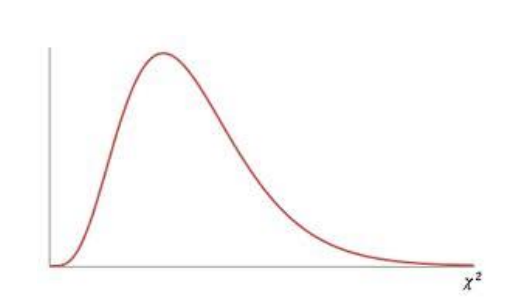

4.8 Goodness of Fit
Test the hypothesis that an observed frequency distribution fits or conforms to a claimed distribution.
Notations:
O - Observed Frequency of a category is the frequency for the category observed in the sample data.
E - Expected Frequency of a category is the claimed frequency for the category – a calculated value.
K - Number of Different Categories or outcome
n - Total Number of Trials (the sample size)
Requirements:
- The data have been randomly selected.
- The sample data consist of frequency counts for each of the different categories.
- For each category, the expected frequency is at least 5. (The expected frequency for a category is the frequency that would occur if the data actually have the distribution that is being claimed. No requirement that the observed frequency for each category must be at least 5.)
Test Statistic for a Goodness of Fit Test
We will get this value from StatCrunch, but it can be calculated by hand:
\(\chi^{2}=\sum \frac{(O-E)^{2}}{E}\)
Calculating Expected Frequencies (E)
- Expected frequencies are equal: \(E=n/k\)
- Expected frequencies are not equal: \(E=np\) (for each category)
Null and Alternative Hypotheses
- Null, \(H_0\)
The distribution of ___________ is the same as the expected distribution.
For each category, the observed value is equal to the expected value.
Mathematically:
\(p_1=p_2=p_3...\) for an expected uniform distribution
\(p_1=\_\_\_,\;p_2=\_\_\_,\;p_3=\_\_\_...\) for any non-uniform expected distribution.
- Alternative, \(H_A\)
The distribution of _____________ differs from the expected distribution.
In the categories, at least one observed value is NOT equal to the expected value.
Using StatCrunch for a Goodness of Fit Test:
- Identify the critical chi-squared value, \(\lambda_{c v}^{2}\) in order to shade your curve.
STAT - Calculators - Chi-Square
- Enter degrees of freedom, DF = k – 1
- Area to the right (always a right-tail test, use ≥) is the significance level
- Run the test and record the important information:
STAT – Goodness of Fit – Chi Square Test – fill in information about your observed and expected values –
Identify
- Test Statistic (Chi-Square)
- P-value
- Mark your curve with your test statistic. Is it in the shaded rejection region in the right tail?
- Make your decision about the null. Was p-value < alpha?
The Chi-Square Curve for a Goodness of Fit Test
Goodness-of-Fit is always a right-tailed test. Large values of \(\chi^{2}\) result from significant differences between observed and expected frequencies. When the test statistic falls in the critical region in the right tail, we know that our observed frequencies are too different from the claimed distribution for it to be a good fit.

- College Dining: The college dining service claims there is no difference in student preferences among the following
four entrees: pizza, cheeseburgers, chicken strips, and salad. A sample of 200 students showed that 61 preferred
pizza, 49 preferred cheeseburgers, 54 preferred chicken, and 36 preferred salad. Use a 0.10 significance level to test
the dining services claim that there is no difference in student preferences.
Entree Pizza Cheeseburger Chicken Strips Salad Number Observed 61 49 54 36 Number Expected 50 50 50 50
The original claim:
There is no difference in student preferences among the four entrees—the preferences follow a uniform distribution. \(H_0\):
p1 = p2 = p3 = p4 The distribution of the four entrees is the same as the expected uniform distribution. \(H_A\):
The distribution of the four entrees differs from the expected uniform distribution. \(\alpha =\)
\(0.10\) \(\chi_{C V}^{2}=\)
\(6.251\) \(\chi_{T S}^{2}=\)
\(6.680\) p-value:
\(0.0828\) Rejection Criteria: Reject \(H_0\) if
p-value < 0.10 Decision:
Reject \(H_0\) Concluding Statement:
There is sufficient evidence to reject the claim that there is no difference in student preference between pizza, cheeseburgers, chicken strips, and salad. Describe the claimed distribution:
Uniform Was it a good fit?
No - Ice-Cream Store (Different Expected Values for Each Category): An ice-cream store manager predicts the following distribution for the daily sale of the 6 flavors offered at his store
in the month of January.
Strawberry: 10%
Cookie Dough: 20%
Orange Sherbert: 10%
Vanilla: 30%
Mint Chocolate Chip: 10% Chocolate: 20%
On January 10, his store sold the following scoops of ice-cream.
Strawberry: 25 scoops
Cookie Dough: 35 scoops
Orange Sherbert: 20 scoops
Vanilla: 50 scoops
Mint Chocolate Chip: 30 scoops Chocolate: 40 scoops
Test the store manager’s claim that the distribution of sales of the six flavors are his predicted values.
Flavor Strawberry Cookie Dough Orange Sherbert Vanilla Mint Choc Chip Chocolate Observed 25 35 20 50 30 40 Expected 20 40 20 60 20 40
The original claim:
The distribution of sales in the month of January is 10% Strawberry, 20% Cookie dough, 10% Orange Sherbet, 30% Vanilla, 10% Mint Chocolate chip, and 20% Chocolate. \(H_0\):
The distribution of flavors is the same as the expected distribution. \(\mathrm{p}_{1}=.10, \mathrm{p}_{2}=.20, \mathrm{p}_{3}=.10, \mathrm{p}_{4}=.30, \mathrm{p}_{5}=.10, \mathrm{p}_{6}=.20\) \(H_A\):
The distribution of flavors differs from the expected distribution. \(\alpha =\)
\(0.05\) \(\chi_{C V}^{2}=\)
\(11.1\) \(\chi_{T S}^{2}=\)
\(8.54\) p-value:
\(0.1288\) Rejection Criteria: Reject \(H_0\) if
p-value < 0.05 Decision:
Fail to Reject \(H_0\) Concluding Statement:
There is not sufficient evidence to reject the claimed distribution of ice cream sales. - Flat Tire and Missed Class: A classic tale involves four carpooling students who missed a test and gave as an
excuse a flat tire. On the makeup test, the instructor asked the students to identify the particular tire that went flat.
If they really didn’t have a flat tire, would they be able to identify the same tire? The author asked 41 other student
to identify the tire they would select. The results are listed in the following table (except for one student who
selected the spare). Use a 0.05 significance level to test the author’s claim that the results fit a uniform distribution.
What does the result suggest about the ability of the four students to select the same tire when they really didn’t
have a flat?
Tire Left Front Right Front Left Rear Right Rear Observed (# of students who selected) 11 15 8 6 Expected 10 10 10 10
The original claim:
There is a uniform distribution—each tire is equally likely to be selected. \(H_0\):
The distribution of the tire selection is the same as the expected uniform distribution. \(\mathrm{p}_{1}=\mathrm{p}_{2}=\mathrm{p}_{3}=\mathrm{p}_{4}\) \(H_A\):
The distribution of the tire selection differs from the expected uniform distribution. \(\alpha =\)
\(0.05\) \(\chi_{C V}^{2}=\)
\(7.8\) \(\chi_{T S}^{2}=\)
\(4.6\) p-value:
\(0.2035\) Rejection Criteria: Reject \(H_0\) if
p-value < 0.05 Decision:
Fail to Reject \(H_0\) Concluding Statement:
There is not sufficient evidence to reject the claim of a uniform distribution where each tire is equally likely to be selected. What does the result suggest about the ability of the four students to select the same tire when they really didn’t have a flat?
The data suggests that the four students would all pick a different tire if they were guessing—so if they said the same tire, they probably weren’t lying.